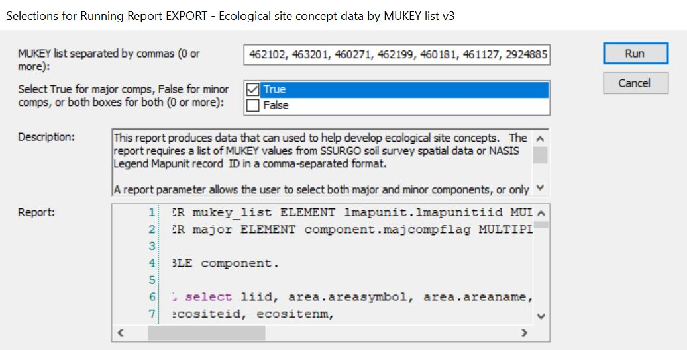

Chapter 3 Components
Components are one of the core concepts in the NRCS ecological workflow. Ecosites are correlated to components.
Often times we will access component level data using a query and then the fetchNASIS function. One of the fetchNASIS arguments is duplicates. This argument helps to deal with the fact that components (coiids) can be associated with multiple legends. In the vast majority of cases, a component being associated with multiple legends is the result of a MLRA mapunit. An MLRA mapunit uses the same data mapunit across survey boundaries. MLRA mapunits are increasingly popular because they allow mapunits to span larger, environmentally contiguous areas, like MLRAs, rather than being restricted to political or administrative boundaries, like counties and soil survey areas. As a result, a component (coiid) can be associate with multiple legends. By default (duplicates = FALSE), fetchNASIS outputs a single instance for each component and does not include legend level information, such as areasymbol, mukey, muacres, etc. To include legend level information, you must duplicate (duplicates = TRUE) the components, or report each component multiple times if it exists in multiple legends. If duplicates = TRUE, components will be listed for every time they are used in a different legend. If a component is used in four legends, it will be listed four times. When components are duplicated, each instance is associated with a particular legend, therefore the specific legend information will be included. The full list of additional variables that will be include is: coiidcmb, muiid, lmapunitiid, mukey, musym, nationalmusym, muname, mukind, mutype, mustatus, muacres, farmlndcl, repdmu, areasymbol, areaname, ssastatus, cordate.
3.1 Identify components in MLRA?
There are NASIS Queries that allow querying by MLRA. Unfortunately, this is not the best approach. See the section What mapunits are in an MLRA for an explanation of why. Spatial intersection of MLRA boundaries and mapunits is more reliable.
- Determine the mapunits in the MLRA using the Mapunits in MLRA tool
- Take the group of mapunits and enter them into Query > MLRA09_Temple > ARE/LMU/MU/DMU by Lmukey list.
Run against National Database:

Run against Local:

- Acquire the component names and component IDs using R:
Load the soilDB package and fetch NASIS data
library(soilDB)
my.components.MLRA <- fetchNASIS(from = "components", duplicates = TRUE)Look at component names - the head() function shows just the first six records. Remove the head() function to see all the component names
head(my.components.MLRA$compname)## [1] "Clay pits" "Quarry" "Pits" "Dams" "Water" "Dams"Look at the component IDs
head(site(my.components.MLRA)$coiid)## [1] 1199623 658862 1201344 650195 650196 6501953.2 Identify components in Soil Survey Area?
Queries by Soil Survey Area are much more reliable than queries by MLRA. As previously mentioned, queries by MLRA are not ideal because the mapunit overlap tables are imperfectly populated. The Soil Survey area corresponds to the legend, and this means that components are reliably associated with Soil Survey Areas. Therefore, beginning with a query is the preferred approach:
Run against National

Run against Local

Acquire component names and IDs using R.
Load the soilDB package and fetch NASIS data
library(soilDB)
my.components.SSA <- fetchNASIS(from = "components", duplicates = TRUE)## Warning: Horizon top depths contain NA! Check depth logic with
## aqp::checkHzDepthLogic()## Warning: Horizon bottom depths contain NA! Check depth logic with
## aqp::checkHzDepthLogic()## Warning in `hzidname<-`(`*tmp*`, value = "chiid"): horizon ID name (chiid) not
## unique. unique ID not changed.Look at component names - the head() function shows just the first six records. Remove the head() function to see all the component names
head(my.components.SSA$compname)## [1] "Water" "Rock outcrop" "Typic Cryorthents"
## [4] "Benchlake" "Rock outcrop" "McDermand"Look at the component IDs
head(my.components.SSA$coiid)## [1] 650196 2405837 2405838 2405955 2405841 27760013.3 Existing component, ecosite correlations
Perhaps we want to see what ecosite each component is correlated to. For this example, we will work with all the components in MLRA 18 using the Standard Dataset and packages.
With the Standard Dataset loaded, let’s look at the correlations between component ID and ecosite ID. This script takes our components in MLRA 18, pulls out the site level data (allows us to ignore pedon data), and then selects only the columns for component ID and ecosite ID (there are lots of other columns you can choose from, tailor to your needs). Finally we look at just the head() of the comp.ecosite.correlations. If you want to see the full dataframe, remove head().
comp.ecosite.correlations <- my.components.MLRA %>% aqp::site() %>%
dplyr::select(coiid, ecosite_id)
head(comp.ecosite.correlations)## coiid ecosite_id
## 1 1199623 <NA>
## 2 658862 <NA>
## 3 1201344 <NA>
## 4 650195 <NA>
## 5 650196 <NA>
## 6 650195 <NA>3.5 Ecological characteristics of components? (non-programmatic)
One of the best ways to do this is a NASIS report: NASIS > Reports > MLRA02_Davis > EXPORT - Ecological site concept data by MUKEY list v3. This report takes mapunit keys (MUKEY) as input. If you are interested in all the components in an MLRA, refer to What mapunits are in an MLRA?. If you are interested in a Soil Survey Area ……
- Run against National 
- In the resulting output (html output in your browser), click anywhere, ctrl + a (select all), ctrl + c (copy)
- Open Excel, click in top left cell, ctrl + v (paste)
- Ctrl + a (select all), Insert > Table
Now you have a table with lots of ecological characteristics. You can use the column headers to filter in various ways. If you prefer to work in R, save this file as a .csv and read it into R.
3.6 Ecological characteristics of components? (programmatic)
Load the Standard Dataset and packages.
Let’s start off by removing miscellaneous areas and minor components. This is going to simplify things and remove some of the oddities that may exist in the data. Ecological sciences do not correlate to misc. areas or minor components, so it will not be a loss to us.
nasis_selection <- subset(my.components.MLRA, compkind != "miscellaneous area" &
majcompflag == "1")Horizon level data
Create data frame from the horizon level data. This script provides the flexibility to add characteristics of interest. If there are other horizon level data that you are interested in, you can add it following the same syntax shown below. To see what horizon level data is available, type ‘nasis_selection@horizons$’ into the console. Horizon level data is summarized into site level info. If you add other horizon level data, make sure it is summarized in a conceptually meaningful way.
horizon_df <- data.frame(texture = nasis_selection$texture,
frag_vol = nasis_selection$fragvoltot_r,
sand = nasis_selection$sandtotal_r,
clay = nasis_selection$claytotal_r,
sieve10 = nasis_selection$sieveno10_r,
thickness = nasis_selection$hzdepb_r - nasis_selection$hzdept_r,
rock_frag = nasis_selection$total_frags_pct,
ph_l = nasis_selection$ph1to1h2o_l,
ph_r = nasis_selection$ph1to1h2o_r,
ph_h = nasis_selection$ph1to1h2o_h,
awc_l = nasis_selection$awc_l,
awc_r = nasis_selection$awc_r,
awc_h = nasis_selection$awc_h,
coiidcmb = nasis_selection$coiidcmb) %>% left_join(site(nasis_selection) %>% dplyr::select(coiidcmb, coiid)) %>%
select(-coiidcmb) %>% dplyr::rename(component = coiid)## Joining, by = "coiidcmb"Separate the texture column
horizon_df$texture_qualifier <- horizon_df$texture %>% stringr::str_extract(".*(?=-)")
horizon_df$texture_only <- horizon_df$texture %>% stringr::str_extract("(?<=-).*")
horizon_df$texture_only <- ifelse(is.na(horizon_df$texture_only), horizon_df$texture,
horizon_df$texture_only)Working with texture:
We have two goals for texture. One, we want to have a textural modifier where appropriate (i.e., CB, CBV, GR). Two, we want to have a texture (i.e., L, CL, SC). Ultimately, we want a single textural modifier and a single texture to represent the entire soil profile. We are starting off with textural modifiers and textures for each horizon, though. Therefore, we need to consider how to aggregate that data.
Textural modifiers -
For textural modifiers, we will choose the textural modifier from the thickest soil horizon and that textural modifier will be used as a value that represents the entire profile.
Before doing that, we are going to change the depth of horizons that were not textured. For those horizons that were not textured, we are going to change the depth to 0.1 cm. This will prevent textural modifiers from being defined based on a horizon that was not textured. For example, a BR horizon is automatically assigned a depth of 25 cm. Depth of BR has limited ecological significance, and we do not want the texture of the soil profile to be determined by BR conditions. We are also specifically stating that texture is not equal to “BR” because several horizons that are BR have values of 0 for sand and clay when they should be NAs.
horizon_df$thickness_modified <- ifelse(is.na(horizon_df$clay), 0.1,
ifelse(horizon_df$texture == "BR",
0.1, horizon_df$thickness))Now, we assign the textural modifier from the thickest horizon to the component.
summarized_texture_qualifier <- horizon_df %>%
dplyr::group_by(component, texture_qualifier) %>%
dplyr::summarize(combined_thickness = sum(thickness_modified)) %>%
dplyr::ungroup() %>%
dplyr::group_by(component) %>%
top_n(1, combined_thickness) %>% ungroup() %>%
dplyr::select(-combined_thickness) Texture -
Now, we are going to assign a texture to the entire profile. For texture, we have quantitative data (sand and clay percentages). This allows us to do a weighted average rather than just choosing the texture from the thickest horizon like we did for texture modifiers.
First, we will remove horizons that do not have textures. We will also remove horizons labelled with texture as “BR” because some of those bedrock horizons have sand and clay percentages entered as zero rather than NA. Then, we group the horizons by the component id and calculate a weighted mean for clay/sand, pH, and rock frag using the horizon thickness as the weighting.
weighted_texture <- horizon_df %>%
dplyr::filter(!is.na(clay) & !is.na(sand) & texture != "BR") %>%
dplyr::group_by(component) %>%
dplyr::summarise(clay_mean_texture = weighted.mean(clay, thickness_modified),
sand_mean_texture = weighted.mean(sand, thickness_modified),
ph_l_mean = weighted.mean(ph_l, thickness_modified),
ph_r_mean = weighted.mean(ph_r, thickness_modified),
ph_h_mean = weighted.mean(ph_h, thickness_modified),
awc_l_sum = sum(awc_l * thickness_modified),
awc_r_sum = sum(awc_r * thickness_modified),
awc_h_sum = sum(awc_h * thickness_modified),
rock_frag = weighted.mean(rock_frag, thickness_modified),
depth_to_restr = sum(thickness_modified)) %>%
dplyr::mutate(textural_class = aqp::ssc_to_texcl(clay = clay_mean_texture,
sand = sand_mean_texture))Combine the texture qualifiers and the textures into a dataframe
horizon_to_component_data <- dplyr::left_join(summarized_texture_qualifier, weighted_texture)Component level data
Here, we change gears and start assembling component level data.
component_data <-
with(site(nasis_selection),
data.frame(
coiid = coiid,
compname = compname,
compkind = compkind,
areasymbol = areasymbol,
areaname = areaname,
comppct_r = comppct_r,
slope_l = slope_l,
slope_r = slope_r,
slope_h = slope_h,
majcompflag = majcompflag,
pmkind = pmkind,
dmuiid = dmuiid,
pmorigin = pmorigin,
surf_frag = surface_total_frags_pct,
elev_l = elev_l,
elev_rv = elev_r,
elev_h = elev_h,
map_l = map_l,
map_rv = map_r,
map_h = map_h,
maat_l = maat_l,
maat_rv = maat_r,
maat_h = maat_h,
ffd_l = ffd_l,
ffd_rv = ffd_r,
ffd_h = ffd_h,
aspectccwise = aspectccwise,
aspectrep = aspectrep,
aspectcwise = aspectcwise,
landform = landform_string,
taxtemp = taxtempregime,
drainagecl = drainagecl,
ecosite = ecosite_name,
ecosite_id = ecosite_id,
taxorder = taxorder,
taxsuborder = taxsuborder
)
)Collect restriction data
restriction_data <- restrictions(nasis_selection) %>%
dplyr::select(coiid, reskind, resdept_l, resdept_r, resdept_h, reshard) %>%
subset(!grepl("noncemented", reshard)) %>%
dplyr::group_by(coiid) %>%
arrange(resdept_r) %>%
dplyr::slice(1)Merge component data and restriction data
component_data_combined <- left_join(component_data, restriction_data)## Joining, by = "coiid"Merge horizon data and component data
all_data <- horizon_to_component_data %>%
dplyr::rename(coiid = component) %>%
left_join(component_data_combined) %>%
dplyr::select(coiid, compname, ecosite, ecosite_id, landform, pmkind,
pmorigin, taxtemp, textural_class, texture_qualifier,
rock_frag, surf_frag, depth_to_restr, drainagecl, slope_l,
slope_r, slope_h, ph_l_mean, ph_r_mean, ph_h_mean, elev_l,
elev_rv, elev_h, map_l, map_rv, map_h, maat_l, maat_rv,
maat_h, ffd_l, ffd_rv, ffd_h ,comppct_r, dmuiid,
everything())Save as csv
write.csv(all_data, "C:/Users/Nathan.Roe/Downloads/my_ecosite_report.csv",
row.names = FALSE)